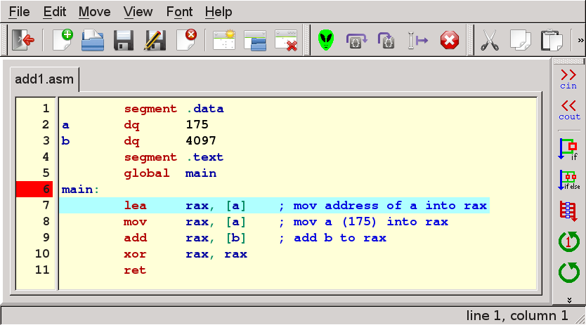

Ebe is designed to be easy to learn. The editor key combinations are the defaults from the Qt menu system which happen to match the expectations of users on most computerst. Control is used on Windows and Linux and the Apple key is used under OS X.
Another useful feature is the inclusion of tooltips. Whenever the cursor lingers on a part of ebe, a tooltip will pop up. They are intended to remind you of special things that are possible which might be hard to remember.
Finally there are help windows which can be viewed by selecting "Help" from the menu and then selecting one of the help windows. For people experienced with running debuggers, the help windows might contain sufficient information and could be a quicker way to learn about ebe than studying this tutorial.
My suggestion is to start by reading the introduction and then try to do some programming with ebe. Return to the tutorials whenever you find something confusing. Perhaps it will be so easy that you won't need to read all these. In case you do need to read the tutorials, I think it would be better to read enough to target solving an immediate need and focus more on your programming.
